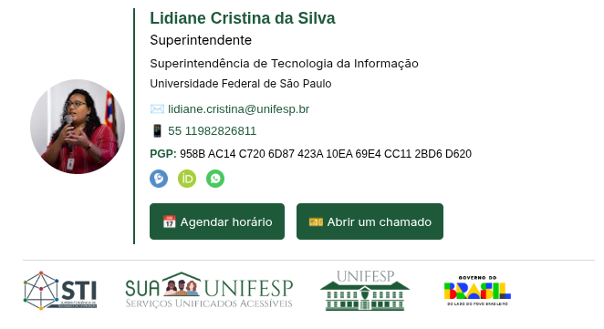

Uma Nova Identidade para nossa Comunicação
Padronizar nossa assinatura de e-mail é um passo fundamental para fortalecer a marca UNIFESP e facilitar o contacto através dos nossos canais oficiais.
Porquê padronizar?
Profissionalismo
Transmite seriedade e confiança em cada e-mail enviado para parceiros e para a sociedade.
Canais de Contacto
Divulga de forma eficiente os seus ramais, agenda, redes académicas e canais de atendimento oficial.
Acessibilidade Visual
Garante que a assinatura seja lida corretamente em qualquer dispositivo, do desktop ao mobile.

Recursos da Ferramenta
Autopreenchimento
Integração com o diretório institucional para buscar o seu nome e foto via e-mail.
Redes Académicas
Suporte completo para Lattes, ORCID, ProdMais, Google Académico e muito mais.
Modelos Versáteis
Escolha entre o modelo Completo (com foto) ou o Simplificado (minimalista).
Privacidade
Desenvolvido com foco na segurança: os seus dados são processados apenas no seu navegador.
Backup JSON
Exporte os seus dados para um ficheiro e reutilize-os sempre que precisar de atualizar.
Hierarquia Institucional
Inclua a sua unidade de lotação e unidade superior de forma clara e padronizada.
Pronto para transformar a sua comunicação?
Crie a sua assinatura institucional agora mesmo.
Começar agora
Dúvidas ou esclarecimentos?
Consulte os tutoriais detalhados e a base de conhecimento no portal:
sua.unifesp.br
Orgulho em ser Software Livre
Este é o segundo software livre desenvolvido integralmente pela Superintendência de Tecnologia da Informação (STI). Promovemos a transparência e a inovação aberta disponibilizando o nosso código para toda a comunidade académica e externa.
Contribuir no GitHub